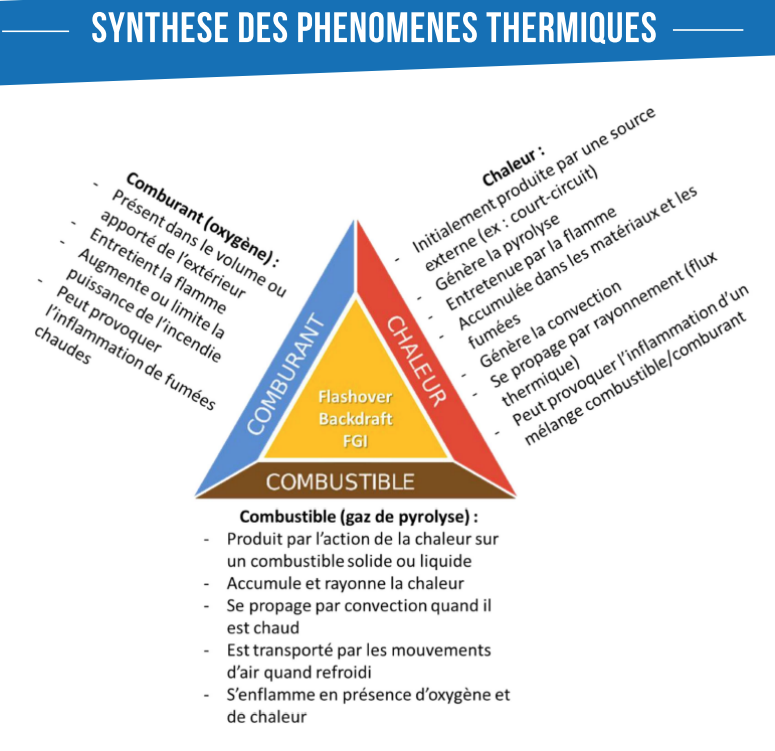
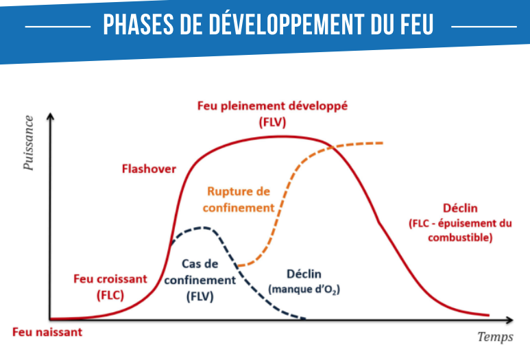
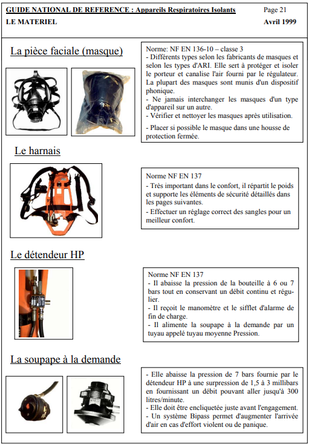
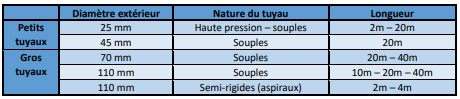
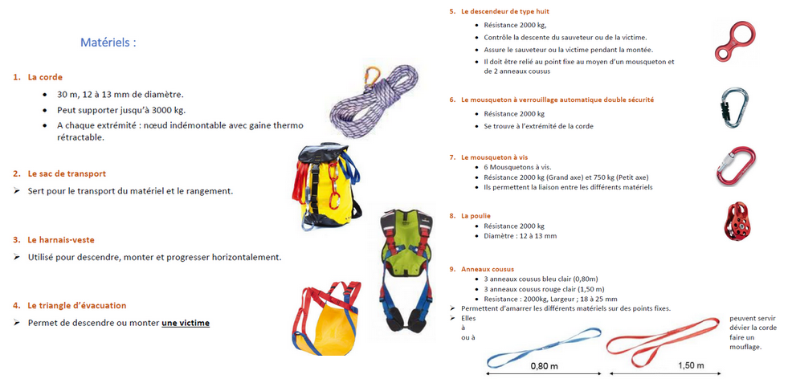
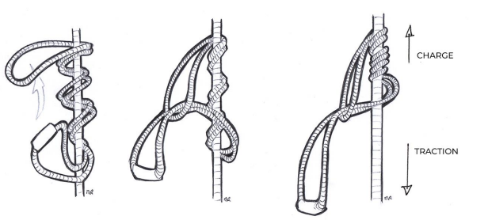
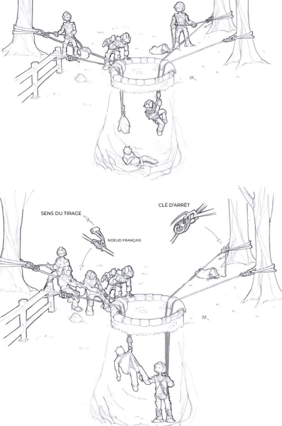
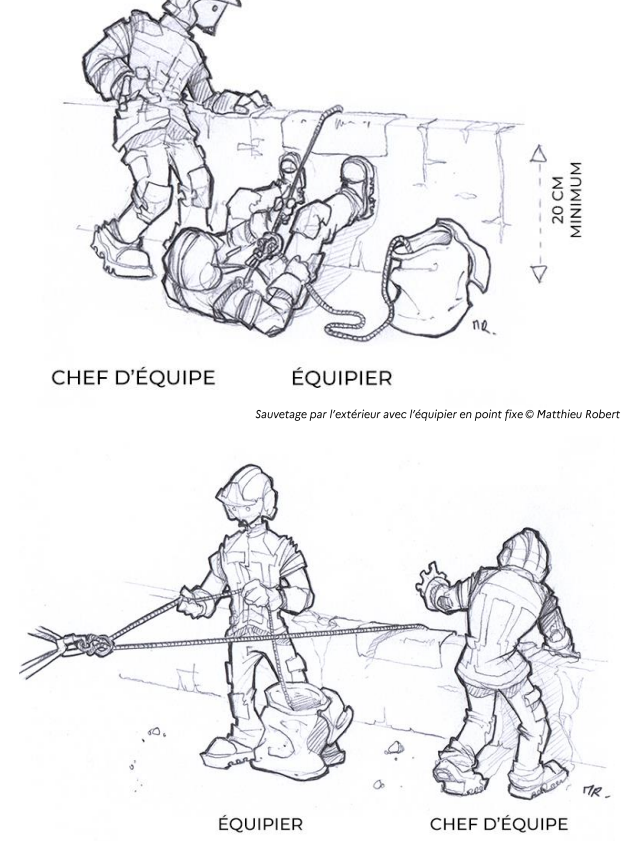

Documents de référence
Techniques et sauvetage
GTO établissements et techniques extinctionPDF · 7,6 MoGTO sauvetages et mise en sécuritéPDF · 19,7 MoVéhicules et milieu agricole
dop-inc-101 Urgences sur les véhiculesPDF · 1,3 MoNDO-IUV Feux sur les véhiculesPDF · 2,6 MoDOP-INC-108 - interventions en milieu agricolePDF · 1,5 MoMEM-INC-108 - feux en présence engraisPDF · 1,9 MoMEM-INC-108 - feux produits phytosanitairesPDF · 1,4 MoFumées, gaz et énergies
GDO toxicité des fuméesPDF · 7,3 MoFOP-INC-107 - smoke stopperPDF · 1,2 MoGDO bouteilles de gazPDF · 969 KoGDO Interventions photovoltaïquesPDF · 1,4 MoGDO interventions en présence de gazPDF · 41,9 MoNIO DGSCGC hydrogènePDF · 2,7 MoThéorie appliquée à l’incendie
| Feu !


Limite Supérieure Inflammable (LSI) : 74 % (volume de CO dans l’air). Au-delà trop riche ; manque d’oxygène pour permettre la combustion.
Modes propagation du feu
Classes feu & Extincteurs

|
Techniques d’extinction
Procédés d’extinction
Les techniques d’extinction
Les techniques d’extinction Action à la lance : 5D
Types de jets
|
Matériel incendie
ARI
 Ligne de vie

Échelles
à crochets : sauvetage ou reconnaissance quand on peut pas utiliser une autre échelle.
2 pans : pour 1er et 2nd étage. 1 personne par pan (sauf sauvetage), mains sur les montants (déploiement/reploiement). 1/3 du mur de la longueur dépliée. Technique pour attacher le trait (petite cordelette) : déploiement rapide. Important le trait en cas de parachute mal enclenché. Amarrage et blocage de l’échelle (sangle), technique avec la hache / Halligan Les tuyaux
 Les hydrants
 Ouvrir complètement un poteau incendie : 13 tours pour les PI80-PI100 et 17 tours pour les PI150 (marque jaune sur le poteau).
Poteau sur-pressé : jaune. Poteau aspiration : bleu.
Aspiration : 8m de tuyau max, 6 mètres de dénivelé négatif max.
Ouvrir complètement un poteau incendie : 13 tours pour les PI80-PI100 et 17 tours pour les PI150 (marque jaune sur le poteau).
Poteau sur-pressé : jaune. Poteau aspiration : bleu.
Aspiration : 8m de tuyau max, 6 mètres de dénivelé négatif max.
|
Manœuvres incendie
BAT
Établissement d'une LDT
| Équipier | CE |
|---|---|
| Aide déroulement du dévidoir jusqu'au 1er raccord - suit ce jusqu'au point d'attaque |
Récupère lance du conducteur - fait sa réserve (2,3 tours tuyau sur l'épaule) - va au point d'attaque |
Établissement d'une LDV
| Équipier | CE |
|---|---|
| récupère 2 tuyaux (45) ou 1 (70) du conducteur | récupère 1 tuyaux (45) et une LDV du conducteur |
| Vont au point d'attaque et déroule un minimum de tuyau | |
| prépare le branchement et apporte le raccord au conducteur, rapporte le tuyau de réserve au point d'alimentation rejoint le CE en vérifiant l'établissement |
prépare sa lance et attend dos au feu avant mise en eau - ordre "prêt" |
| Différents établissements :
- sur l’engin - sur une division d’alimentation - sur une colonne sèche ou humide - sur une division d'attaque Vertical par l’extérieur : tuyaux hissés à l’aide de la commande ou tires derrière le chef BAT si échelle ; solidarise par des sangles ou crochets d’échelle. |
|
Établissement particulier : lance à mousse / queue de paon / lance canon
| Équipier | CE |
|---|---|
| E-BAL : récupère émulseur effectue raccordement tuyau et injecteur côté alimentation donne au conducteur |
CE-BAL : récupère proportionner plonge injecteur dans l'émulseur, vérifier le % (écrit sur bidon) |
| E-BAT : récupère 2 tuyaux effectue raccordement tuyau et injecteur côté lance |
CE-BAT : récupère une lance à mousse et 1 tuyau prépare sa lance (500L minute - jet droit) |
Remplacement tuyau
| Équipier | CE |
|---|---|
| Récupère tuyau - établi parallèlement au tuyau a remplacer ferme sur ordre CE - remplace tuyau côté alimentation |
"fermer" - remplace tuyau côté lance - "ouvrer" |
Prolongation tuyau
| Équipier | CE |
|---|---|
| Récupère tuyau - établi parallèlement 2 demi-raccord point d'attaque se rend a l'alimentation et ferme puis ouvre sur ordre |
"Fermer" - Remplace tuyau - "ouvrer" |
BAL
Alimentation d'une prise d'eau
| Équipier | CE |
|---|---|
| Cas dévidoir : Récupèrent le dévidoir et se rende au d'emplacement de la division mixte. Cas tuyau et division : sens d'établissement au plus simple (de l'engin à la division généralement) |
|
| Repart à l'alimentation avec le dévidoir | Dépose la division - ferme tous les robinets sauf un - rejoint équipier - dépose 1/2 raccord - remet au conducteur vérifie établissement et ferme le robinet |
Types : Division d'attaque division d’alimentation d'une colonne sèche |
Alimentation de l'engin avec dévidoir
| Équipier | CE |
|---|---|
| Récupère une clé de poteau !
Cas tuyaux 70 : équipier 2 tuyaux, CE 1 tuyau. Cas dévidoir : récupèrent le dévidoir - détache division et donne demi-raccord au conducteur - part avec dévidoir jusqu'à l'alimentation |
|
| Détache demi-raccord et donne au CE Prépare un second tuyau pour alimentation en bretelle |
Prépare (purge) le poteau et raccorde le (les en cas de bretelle) demi-raccord mets en eau quand le dispositif est prêt |
Mises en situation incendie
Généralités
Avant et pendant l'engagement :lecture du feu & contexte -->VBEFFCOS
|
Avant engagement sous-ARI
Check croisé sécurité binôme (important CE)--> RAPACE
|
Engagement dans un local
|
TOOTEM
1. Observations avant d’ouvrir une porte
|
Reconnaissance / Recherche et sauvetage
|
Feu de VL GAZ - Électrique
Si feu naissant : ok 1 LDV Si véhicule complètement en feu : 2 LDV 250Lmin minimum, dont 1 qui s'occupe du réservoir pendant que l'autre procède à l'extinction de la partie arrière à la partie avant. Jet plein à 50m, JDA à partir de 10m |
Bouteilles de Gaz
|
Binôme de sécurité et SDS
|
Procédure gaz (classique et renforcé)
|
Attaque atténuation
|
Pose Smoke stopper
|
Forcement
|
Matériel LSPCC
Lot + Nœuds | |
 |
|

 |
Manœuvres LSPCC
LSPCC - généralité
|
LSPCC - sauvetage au moyen du harnais

|
LSPCC - sauvetage en excavation
 |
LSPCC - sauvetage par l'extérieur
 |
LSPCC - Ouverture de porte
|